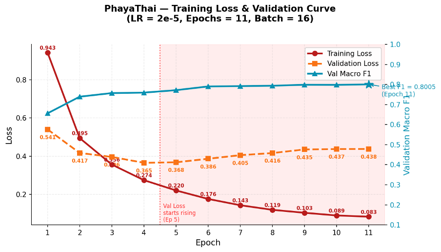

กรรวี ศิริขันธ์
( แพรว )
Computer Science • Kasetsart University • GPAX 3.03
BA Co-op @ WHP Global · Transformer NLP Research
เส้นทางการเรียนรู้และประสบการณ์
จากนิสิตวิทยาการคอมพิวเตอร์ สู่ประสบการณ์จริงในบทบาท Business Analyst
มหาวิทยาลัยเกษตรศาสตร์
คณะวิทยาศาสตร์ สาขาวิทยาการคอมพิวเตอร์
GPAX 3.03
สหกิจศึกษา (Co-op)
Business Analyst @ WHP Global Solution Service
Final Project
วิเคราะห์ความคิดเห็นรีวิวสกินแคร์ด้วย Transformer Model
Business Analyst @ WHP Global Solution Service
สหกิจศึกษา 6 เดือนเต็ม • 4 บทบาทรับผิดชอบหลัก (Key Responsibilities)
Requirement Analysis
วิเคราะห์ความต้องการของลูกค้าและจัดทำ Function Listing เพื่อกำหนดขอบเขตระบบ
Process & UI Design
ออกแบบ User Flow และ Wireframe เพื่อสื่อสารแนวทางการทำงานและสร้างความเข้าใจร่วมกันระหว่างลูกค้าและทีมพัฒนา
System Testing
จัดทำ Test Case สำหรับทดสอบระบบแบบ UAT เพื่อตรวจสอบความถูกต้องของฟังก์ชัน
Project Coordination
จัดทำ Project Plan เพื่อกำหนดระยะเวลาและลำดับขั้นตอนการทำงาน
วิเคราะห์ความคิดเห็นจากรีวิวสกินแคร์และเครื่องสำอางด้วย Transformer Model
- รวบรวม จัดเตรียมและติดป้ายกำกับข้อมูลรีวิวภาษาไทย จำนวน 15,905 รายการ
- วิเคราะห์ความคิดเห็น 10 ด้าน เช่น ผลลัพธ์ ราคา เนื้อสัมผัส และการจัดส่ง
- ทดลอง Fine-tuning และเปรียบเทียบประสิทธิภาพโมเดลภาษาไทย 3 โมเดล
Macro F1-Score 79.41%

โปรเจกต์เพิ่มเติม (Additional Projects)
การประยุกต์ใช้งานคลาวด์และจำลองระบบบริหารจัดการระดับองค์กร
Nong Plodpai Chatbot
- ออกแบบและจัดทำชุดข้อมูลคำถาม – คำตอบเกี่ยวกับวิธีคุมกำเนิด ผลข้างเคียง ค่าใช้จ่าย และสถานที่ให้บริการ
- พัฒนาโมเดลเพื่อแยกประเภทคำถามของผู้ใช้ 29 ประเภท เพื่อให้แชตบอตตอบคำถามได้ตรงประเด็น
- นำโมเดลขึ้น Cloud และเชื่อมต่อกับ LINE เพื่อให้แชตบอตสามารถโต้ตอบกับผู้ใช้ได้แบบเรียลไทม์
ERP Analysis for ThaiNamthip
- ศึกษาและวิเคราะห์กระบวนการดำเนินธุรกิจของบริษัทไทยน้ำทิพย์
- วิเคราะห์และเลือกโมดูล ERP ที่เหมาะสมกับกระบวนการทำงานของธุรกิจ เช่น จัดซื้อ การผลิต และบัญชี
- ออกแบบ Mockup ระบบ ERP ด้วยแพลตฟอร์ม BEECY เพื่อแสดงภาพรวมการทำงานของระบบ
ทักษะและความสามารถ (Skills)
ผสานทักษะการวิเคราะห์ระบบ ทักษะด้านเทคนิค และทักษะการทำงานร่วมกับทีม